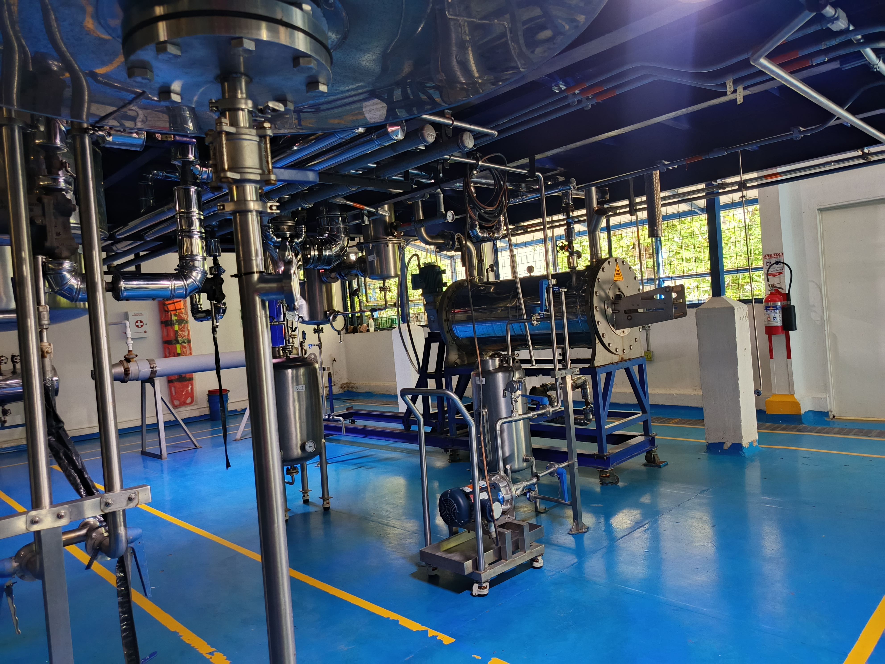
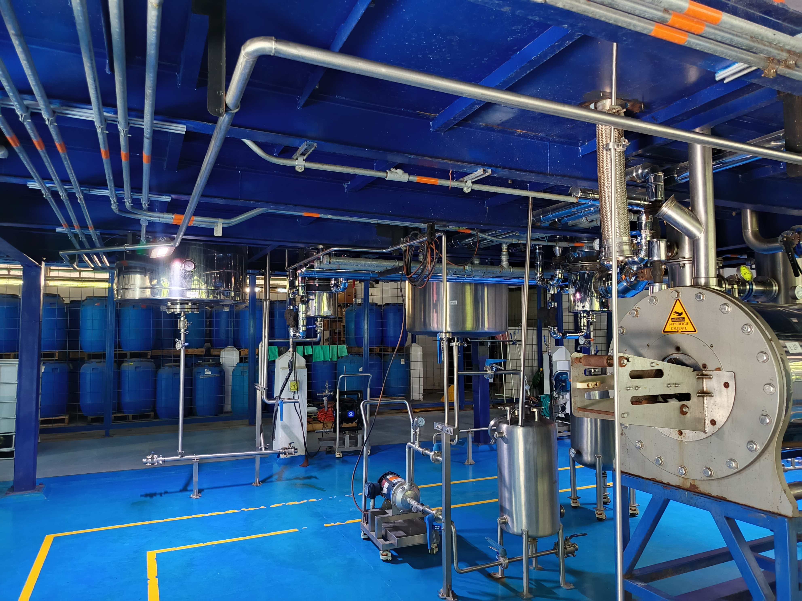
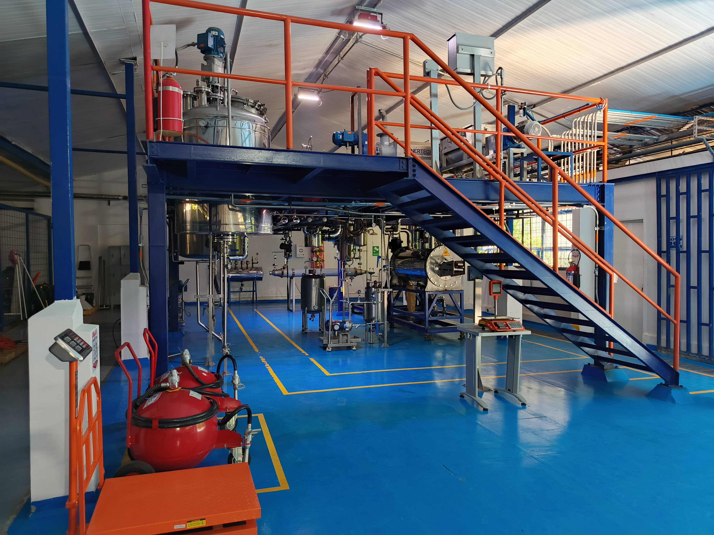

Photo Collage
This collage documents the pilot-scale environment associated with the technology transfer and translational development pathway linked to Fitogénico S.A.S. It illustrates industrial-scale process infrastructure, operational settings, and implementation spaces supporting the transformation of research capabilities into real-world innovation.

Pilot-scale processing infrastructure and production environment.

Industrial platform supporting translational development and scale-up.

Technical inspection and operational interaction within the processing line.

Process equipment and integrated pilot-scale unit operations.

Underside view of process modules, piping, and production layout.

Front view of the installed pilot-scale platform for technology implementation.